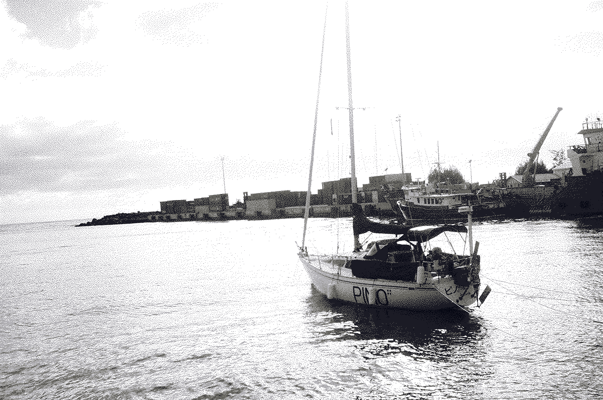

why a boat
From 2012 to 2014, we lived in Japan. Rekka was working in an animation studio, and Devine, in a software company. On weekends and evenings, we worked on our first two games: hiversaires & oquonie. Originally from Québec, we were traveling back and forth between Canada and Japan often. We wanted to exit the wasteful loop of acquiring the necessities of life each time our lives were uprooted.
We had heard of people living on sailboats but neither of us had even stepped foot on one, nevertheless, we soon found ourselves watching the videos of David Wellsford, Teresa Carey and Nike Steiger, and became obsessed with the idea. Lack of experience aside, we thought that traveling was a good catalyst for learning new languages, for developing an interest in foreign cultures and ultimately for building empathy, curiosity, and creativity.
In January 2016, we left the cold of Montréal and moved west to British Columbia, where we purchased pino. Our curiosity soon led us to make our first trip out to sea, which escalated into a circumnavigation of the Pacific Ocean.
Our life at sea changed how we work, and how we think. We've always made art, and always will, but now we are working on ways to keep doing that sustainably, which translates to making lean and open software that are backward-compatible.
A boat, for all its complexity, is in fact a version of simplicity, but of a satisfyingly complex kind. - Adam Nicolson